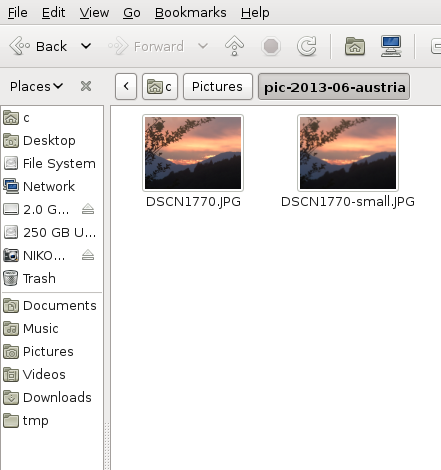
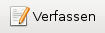
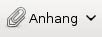
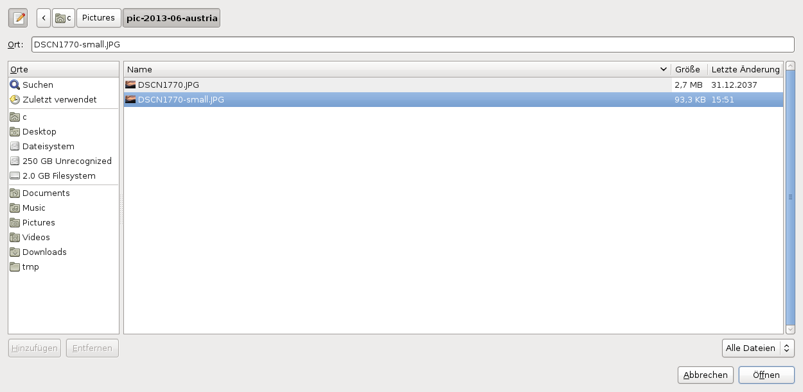
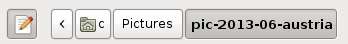
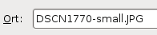
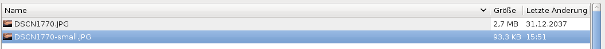
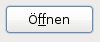
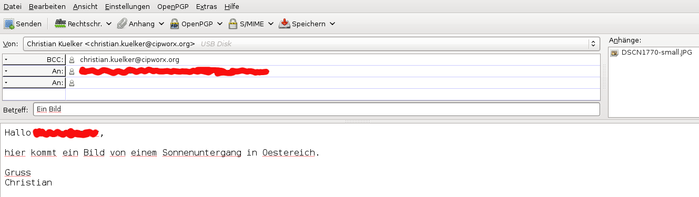
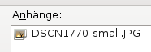

(0) Fuer dieses Beispiel gehen wir davon aus, dass wir das Bild mit dem  Dateinamen
"DSCN1770-small.JPG"an eine E-Mail anhängen wollen. Dieses Bild befindet sich schon als Datei auf der Festplatte. Der Ort an dem diese Datei existiert ist:
/home/BENUTZER/Picutres/pic-2013-06-austria/DSCN1770-small.JPGoder kurz:
~/Picutres/pic-2013-06-austria/DSCN1770-small.JPGDas folgende Bild zeigt DSCN1770-small.JPG zusammen mit DSCN1770.JPG auf der Festplatte. In diesem Beispiel ist
BENUTZER = cMan muss sich den Anhang nicht anzeigen lassen. Dieses wird hier nur wegen der Anschaulichkeit gemacht. Allerdings muss man zwei Dinge wissen: 1. Wo befindet sich er Anhang? Und 2. Wie heisst er? Wenn man diese beiden Fragen nicht mit Sicherheit beantworten kann, sollte man gar nicht erst versuchen einen Anhang zu verschicken.
(1) Zuerst startet man das Mail Programm wie gewohnt und erstellt wie gewohnt eine neue Mail. Beispielsweise durch das Drücken des Knopfes "verfassen". 
(2) Nach dem Schreiben des E-Mail Textes geht man dazu über etwas an die E-Mail anzuhängen (to attach). Hierfür drückt man den Knopf "Anhang" (Attachment).  Dieser Knopf ist oft mit einer Büroklammer gekennzeichnet.
(3) Nach dem der Knopf gedrückt wurde, erscheint ein (Dialog) Fenster, dass die Auswahl einer Datei ermöglicht. 
Dieses Fenster ist der normale Weg um Dateien auszuwählen. Es besteht aus einer Anzeige des Pfades der zur Datei führt  Dann wird das Objekt angezeigt, dass ausgewählt wird. Merkwürdigerweise wird das hier als "Ort" bezeichnet . Es ist wichtig dass, das Objekt ausgewählt wird. Auswählen heißt, dass man mit der Maus 1x darauf klickt und die gesamte Zeile des Objektes blau unterlegt ist.
In diesem Beispiel wird eine Bild-Datei
"DSCN1770-small.JPG"ausgewählt. Man erkennt hier auch, dass sie 93KB groß ist. Eine Größe, die sich gut zum Versenden von Anhängen eignet. Während das andere Bild mit 2.7MB rund 30 mal größer ist. Zum Schluss muss der Knopf 
(4) Das Bild ist nun an die E-Mail angehängt.
Dieses kann man sich leicht veranschaulichen, wenn man in die rechte obere Ecke des Mail Fensters schaut.  Danach kann man das E-Mail wie gewohnt mit dem "senden" Knopf verschicken.
Bemerkung zur Größe: Die Frage was ist groß und was ist zu groß ist relativ. Wenn man sich aber veranschaulicht, dass in Norditalien Internet mit ca. 2kB/s angebunden ist, heißt dass dass man für 93KB rund 46 Sekunden (also fast eine Minute) warten muss, während man für 2.7MB ca. 23 Minuten warten muss. Das Problem ist oft, dass E-Mail mit zu größen Anhängen die Leitung "verstopfen", weil die meisten Programm alle E-Mails der Reihe nach runter laden.